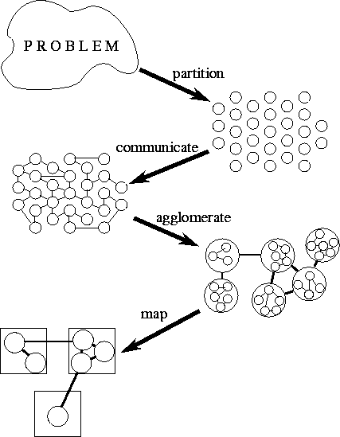

![[DBPP]](pictures//asm_color_tiny.gif)


![[Search]](pictures//search_motif.gif)
Most programming problems have several parallel solutions. The best solution may differ from that suggested by existing sequential algorithms. The design methodology that we describe is intended to foster an exploratory approach to design in which machine-independent issues such as concurrency are considered early and machine-specific aspects of design are delayed until late in the design process. This methodology structures the design process as four distinct stages: partitioning, communication, agglomeration, and mapping. (The acronym PCAM may serve as a useful reminder of this structure.) In the first two stages, we focus on concurrency and scalability and seek to discover algorithms with these qualities. In the third and fourth stages, attention shifts to locality and other performance-related issues. The four stages are illustrated in Figure 2.1 and can be summarized as follows:

Figure 2.1: PCAM: a design methodology for parallel programs.
Starting with a problem specification, we develop a partition,
determine communication requirements, agglomerate tasks, and finally
map tasks to processors.
The outcome of this design process can be a program that creates and destroys tasks dynamically, using load-balancing techniques to control the mapping of tasks to processors. Alternatively, it can be an SPMD program that creates exactly one task per processor. The same process of algorithm discovery applies in both cases, although if the goal is to produce an SPMD program, issues associated with mapping are subsumed into the agglomeration phase of the design.
Algorithm design is presented here as a sequential activity. In practice, however, it is a highly parallel process, with many concerns being considered simultaneously. Also, although we seek to avoid backtracking, evaluation of a partial or complete design may require changes to design decisions made in previous steps.
The following sections provide a detailed examination of the four stages of the design process. We present basic principles, use examples to illustrate the application of these principles, and include design checklists that can be used to evaluate designs as they are developed. In the final sections of this chapter, we use three case studies to illustrate the application of these design techniques to realistic problems.
© Copyright 1995 by Ian Foster